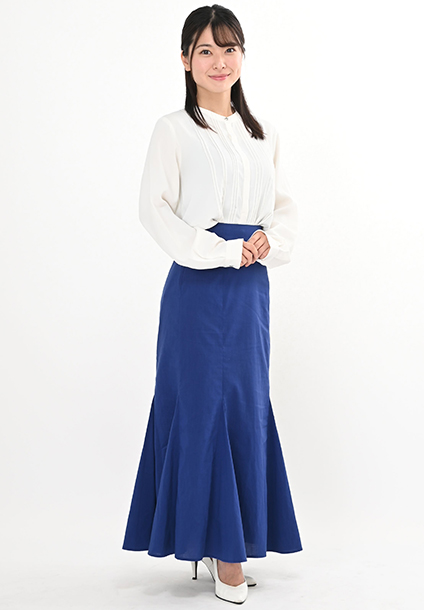

PROFILE
岡崎 美玖



岡崎 美玖Miku Okazaki
| カテゴリ | MC/司会、ナレーター、宅録、ラジオDJ、モデル |
|---|---|
| 地域 | 関東 |
| 身長 | 152cm |
| 趣味 | ラーメン食べ歩き（年間200杯超！）、ゲーム、アニメ鑑賞 |
| 特技 | ヴァイオリンを弾くこと（クラッシックからポップスまで幅広く、歴21年） |
| 資格 | 日本ラーメン検定 ラーメンプロフェッサー（女性初）
ラーメンソムリエ 色彩検定3級 ファッション販売能力検定2級 |
| 参考URL | |
| 音声サンプル | |
| SNS |
経歴
【ラジオ】
- レインボータウンFM「江東モーニング830」
- レインボータウンFM「ナイスク学園」
- レインボータウンFM「すべらきかみ運命クリニック」
【WEB/VP】
- ポート株式会社「就活会議」公式YouTube（2024年～現在）
- ポート株式会社「キャリアパーク」公式YouTube（2024年～現在）
【イベント】
- 流山納涼盆踊り
- 流山おおたかの森ビアフェス
- クラフトビール新酒解禁祭り
- フレッシュホップフェスト
- 米フェスティバル
- パンフェスティバル
- 埼玉県行田市「さきたま火祭り」総合司会
- ほろ酔いフェス 岸本美咲Special Live 3days
- 世界のごはん＆おやつフェスティバル
- 初夏のアクティブフェスティバル
- ART＆MUSIC おおたかの森 総合MC
- 筑波大学 田中康平助教恐竜セミナー
- 東京大学 平沢達也氏恐竜セミナー
- 昆虫研究家 平井文彦氏昆虫ワークショップ
- 流山おおたかの森青空子どもレストラン
- 流山おおたかの森フラワーフェスティバル
- 流山おおたかの森TUTTIワークショップ
- 流山おおたかの森ジャンピオンショー
- 流山おおたかの森ペットDXファッションショー
- 流山おおたかの森グリーンスクエアマーケット
- 流山おおたかの森グラフィックアワードイベント
【セミナー】
- Tfa association CNC CONFERENCE（経営者向けカンファレンス）
- 第42回日本小児心身医学会学術集会
- ILCサポーターズ
【式典/表彰式/懇親会】
- 経済産業省＆Forbes JAPAN主催「ART＆BUSINESS AWARD 2025」授賞式
- 講談社「第25回TRYラーメン大賞」授賞式
- 流山おおたかの森駅前クリスマスツリー点灯式
- みずほ×みん就タイアップイベント＠みずほ丸の内本部
- 株式会社モルテン
- 流山FC新体制発表会
- 株式会社ダリア周年記念パーティー
- 株式会社ダリア「D-LiVE SCHOOL NAVI」NAVI STAGE
【トークショー】※敬称略
- 木原実
- 溝口勇児
- 青木康時
- SUSURU
- 平井文彦（昆虫研究者）
- 平沢達矢（東京大学准教授）
- 田中康平（筑波大学助教）
- 小池直也
【展示会】
- FOOMA JAPAN
- JAPAN IT WEEK
- 電設工業展
- フランチャイズショー
- Interop Tokyo
- ものづくりワールド
- CSPI-EXPO
- JAPANTEX
- CEATEC
- MECT（メカトロテックジャパン）
- その他、大手企業主催展示会多数
【その他インタビュー/ライター】
- 経営者インタビューメディア「The Keyperson」担当中
- 「レッツエンジョイ東京」連載
- 「ラーメンWalker」連載
- 「ヨムーノ」連載
- ラーメンインタビュアーとして各種メディア出演多数